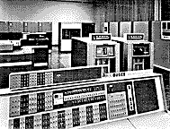
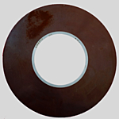

2024-09-06
My Experience with the IBM 7094 and CTSS

An IBM 7094
This note describes my experience at MIT with the IBM 7094 and the CTSS operating system.
My Undergraduate Computer Experience
One reason I wanted to go to MIT was my interest in computers. When I entered MIT as a freshman in 1961, I often passed the glass wall that let passers-by in Building 26 see the Computation Center's 7090, in room 26-152, a computer room about the size of a soccer field. You could see the tape drives spin and the lights blink.
Computer Classes at MIT
As a freshman, I took course 6.41, Introduction to Automatic Computation. The 6 in the course number meant that it was offered by the Electrical Engineering department. It was taught by the late Prof. John McCarthy. This course started out with the "Rochester Machine", an imaginary computer with 100 memory locations that could hold numbers, and two registers: the accumulator and the location counter. The Rochester machine had about a dozen opcodes like ADD, LOAD, STORE, HALT. I learned the basic ideas: program instructions and data are numbers stored in computer memory, programs can read and change memory contents, the computer usually executes instructions in sequence. After that, they taught us FORTRAN II. We punched cards in the basement of MIT Building 26 and submitted our program decks; the next day we picked up our printed output and checked if our program had compiled and run correctly.
You couldn't major in computers at MIT in 1961 -- or anywhere else either. There were about a dozen computer related courses available in the catalog, in four or five departments, and I wanted to take them all. I was in the Mathematics department, which didn't seem to believe in computers at all: I remember my Numerical Analysis laboratory, with its rows of Marchant calculators.
The second computer course I took, after 6.41, was "Artificial Intelligence," taught by the late Prof. Marvin Minsky. This was the old kind of AI, where people wanted to find out how human intelligence worked, and to possibly use computers to do intelligent things. It was heady stuff. Minsky was one of the founders of the field, and showed us how many different ideas the field of AI contained. He was a great teacher.
I took course 6.251, Introduction to System Programming, as soon as I could.
When I took the course, there were a few exercises in the  MAD language,
and then we were presented with CAP (Classroom Assembly Program),
a simple assembler for the 7094, and assigned a series of problems to improve it.
The assembler itself was written in FAP,
and we submitted batch jobs in the form of update runs that applied "alter" directives to the CAP source,
reassembled and linked CAP, and ran a standard test suite.
You got so many points for adding features to the assembler, such as * meaning "the current instruction counter,"
so many more points for putting in a simple expression evaluator, and so on.
The
MAD language,
and then we were presented with CAP (Classroom Assembly Program),
a simple assembler for the 7094, and assigned a series of problems to improve it.
The assembler itself was written in FAP,
and we submitted batch jobs in the form of update runs that applied "alter" directives to the CAP source,
reassembled and linked CAP, and ran a standard test suite.
You got so many points for adding features to the assembler, such as * meaning "the current instruction counter,"
so many more points for putting in a simple expression evaluator, and so on.
The  textbook was by Corbató, Poduska, and Saltzer.
textbook was by Corbató, Poduska, and Saltzer.
Summer Jobs
I had programming jobs back home in Illinois each summer, where I learned the IBM 1401 and IBM 7070.
Part Time Programming as a Student
After I took 6.251, I looked for part-time programming jobs at MIT while I was a student. In 1963-1964 I had part-time work at MIT Project MAC, using CTSS, in Prof. Herb Teager's group.
In 1964-1965, I found a different job as a part-time programmer for Prof. Ithiel de Sola Pool in the MIT Political Science department. I wrote event simulation, survey analysis, and statistical code for the 1401, 7094 FMS and CTSS. As part of this activity, I learned as much as I could about CTSS, and started to make user contributions. I worked with another student programmer, Noel Morris. We shared a windowless office in the library stacks: the great thing about that office was the IBM 1050 terminal, which had a golf-ball printing mechanism that could produce high quality output.
The first program we worked on together was a "cross tabulation" system, written in MAD, described in the memo A General Cross-Tabulation System. It read in survey data with one or more cards per response, each having responses punched in one or more columns. Our program counted how many responses picked each answer and printed totals, e.g. marital status versus number of dogs. The program was quite complex, adaptable to many kinds of coding schemes, and supported many ways of specifying tables and statistical calculations. For years after the MIT 7094 was gone, Noel and I would get queries from social scientists who wanted to use it.
One thing we did was to write a memo describing the program, using TYPSET and RUNOFF, Jerry Saltzer's brand new facility for editing documents online with the time-sharing system and printing it out nicely formatted, with justified right margins. (These programs required a new CTSS file format, with 12-bit characters instead of 6-bit BCD. The CTSS supervisor, the 7750 terminal controller software, and a few CTSS command programs were modified to operate in either the standard 6-bit mode or the new 12-bit mode.)
Noel and I spent many hours learning how FMS and CTSS worked. Part of the Michigan/MAD code was a replacement for the standard FORTRAN output formatter routine, (IOH). (Programs written in FAP (FORTRAN Assembly Program, the 7094 assembler) could use special characters, such as parentheses, in external names. I/O library routines were often given names that FORTRAN and MAD programs could not generate, to avoid name conflicts.) The MIT/Michigan version of (IOH) supported additional format codes used by the MAD language, and had other internal improvements over the IBM version. One change was to use the extra index registers that the 7094 had and the 7090 didn't. And buried deep in the code, there was the line of code
SXA VR16,1 'SOMEBODY HAS TO SAVE IT' SAYS BOB CRABTREE
Noel and I made up the Bob Crabtree Society, open to people who knew where that comment was and what it did.
In 1964, Prof. Pool arranged for us to get an office on the fifth floor of the new Tech Square building, right next to a public terminal room. It was great. We could almost always find a free terminal, either next door or on the 9th floor of Tech Square, and more importantly, there were other programmers there at all hours. We learned from them, shared code, made friendships, tried to impress. The term "hacker" is now disreputable, but it was not so then, and we learned from some of the greatest hackers in the world.
My CTSS Experience After Graduation
Political Science
When I graduated in 1965, I was offered a full-time position on the MIT sponsored research staff, working for the MIT Political Science Dept for Prof. Pool. My stating salary was $550/month, working at Tech Square with Noel and a few other Political Science programmers. We wrote code in MAD and FAP.
(I also wrote a few data analysis programs for the Comp Center's IBM 1401, which was used to create input and print output tapes for the 7094. It sat idle a lot, and using the machine was free, so we ran basic analyses on the 1401 for our users before they submitted batch crosstabs jobs.)
Contributions to CTSS

CTSS was the cutting edge of computing in those days: using the computer on-line instead of running batch jobs was new and controversial. Noel and I contributed programs to CTSS, as interested community members. We wrote a command abbreviation program called ". SAVED" that had an instant messaging feature, and one of the first electronic mail programs, as well as other tools.
A substantial project that Noel and I worked on was implementation in CTSS of the FIB facility: this provided "Foreground Initiated Background," which meant that a CTSS user could specify a sequence of CTSS commands in a RUNCOM file, and then issue the FIB command to add this job to a queue. CTSS's FIBMON daemon chose one job at a time from the queue and ran it, reading commands from the file and writing output to another file. Researchers had the convenience of editing and submitting jobs from their terminal instead of punching cards, and didn't have to wait, unable to do anything else, while the program ran. FIB jobs were also charged at a lower rate than interactive usage. The Political Science users we supported were able to use FIB to submit batch processing jobs that did survey data analysis from time-sharing terminals instead of having to submit FMS batch jobs.
Project MAC
Eventually Noel and I both transitioned from Political Science to working for Project MAC instead. My first MAC assignment was helping to administer CTSS resources for the Project MAC computer. (My former boss Dick Mills saved a copy of the document I wrote about this project.) As the Multics project use of CTSS expanded, I helped sign up users from Bell Labs, who would use the MAC CTSS by dialup from New Jersey. I may have set up the CTSS accounts for Ken Thompson and Dennis Ritchie, among others.
Project MAC Multics Development
Later in the 1960s, I transitioned to the Multics development group and took on projects for Multics as well as CTSS, initially writing design papers on how to do resource accounting and system administration for Multics. Later, Noel and I worked on Multics system bootload and other facilities.
MIT IPSC
Then I left Project MAC for a job at the MIT Information Processing Services Center managing system programming for CTSS, an IBM 360/67 running CP/CMS, and the features of Multics that IPS would need to be able to run a service on it.
When I left MIT IPSC, I took a job in the Honeywell Multics group.
Copyright (c) 1995-2024 by Tom Van Vleck